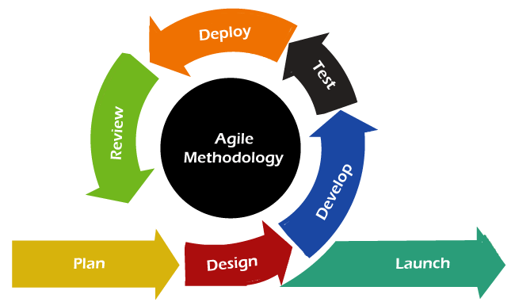

Agile (paindlik) arendusmudel on tarkvaraarenduse lähenemine, mis keskendub kiiretele iteratsioonidele,
pidevale koostööle ja kohandumisele muutuvate nõudmistega. See mudel võimaldab arendajatel ja klientidel
pidevalt suhelda ning teha vajalikke muudatusi arendusprotsessi käigus. Agile arendus põhineb väikestel,
iseseisvatel arendusüksustel (sprintidel), mille käigus arendatakse ja testitakse uut funktsionaalsust.
Agile metoodika peamine eesmärk on pakkuda väärtust kiiresti ja paindlikult, reageerides kiiresti muutuvatele
ärivajadustele ja kasutajate tagasisidele.
Siin on need 12 Agile põhimõtet eesti keeles:
Kliendi rahulolu on kõige tähtsam, seetõttu anname tarkvara kiiresti ja pidevalt kätte.
Muutustega tuleb arvestada ka arenduse hilisemates faasides – Agile protsessid kasutavad muutusi kliendi konkurentsieelise tagamiseks.
Tarkvara tuleb võimalikult tihti kätte anda – näiteks iga paari nädala või kuu järel, et klient näeks pidevat progressi.
Arendajad ja äripooled peavad kogu projekti vältel tihedalt koostööd tegema.
Tee otsuseid ja lase töömeeskonnal töötada iseorganiseeruvalt – parimad arhitektuurid, nõuded ja disainid tekivad iseorganiseeruvatest meeskondadest.
Lihtsus – ülesandeid ja tööd tuleb teha nii lihtsana kui võimalik, et mitte raisata ressursse.
Regulaarne refleksioon ja kohandamine – meeskond vaatab regulaarselt tagasi ja kohandab oma käitumist paremaks.
Tarkvara on peamine edenemise mõõdik.
Paindlik ja jätkusuutlik töötempo – meeskond peab suutma säilitada stabiilse töötempot pikema aja jooksul.
Kõige tõhusam info edastamise viis on otsene ja isiklik suhtlus.
Lihtne ja efektiivne arhitektuur, nõuded ja disainid.
Regulaarne eneseparandamine, et meeskond muutuks järjest tõhusamaks ja kvaliteetsemaks.
Etapp - Planeerimine ja sprintide määratlemine:
Arendusmeeskond ja sidusrühmad määratlevad projekti põhieesmärgid ja jaotavad töö väikesteks sprintideks.
Etapp - Sprint ja arendus:
Sprintide jooksul arendatakse ja testitakse kindlat funktsionaalsust, tagades pideva arenduse ja kvaliteedi.
Etapp - Kliendi tagasiside ja kohandamine:
Iga sprint lõpeb töötava tarkvara esitamisega, kus klient annab tagasisidet ning vajadusel tehakse kohandusi.
Etapp - Tarkvara kasutuselevõtt ja täiustamine:
Pärast mitut iteratsiooni on tarkvara kasutusvalmis, kuid seda täiustatakse edasi vastavalt vajadustele.

Omadus
Head
Vead
Pidev kohandumine
Agile võimaldab kiireid muudatusi vastavalt kliendi vajadustele.
Pidevad muutused võivad tekitada segadust ja lisatööd.
Kiire tagasiside
Arendust kohandatakse pidevalt vastavalt kasutajate soovidele.
Liigne tagasiside võib aeglustada arendusprotsessi.
Töötav tarkvara igas etapis
Iga sprint toodab töötava osa tarkvarast, mis võimaldab kiiret kasutuselevõttu.
Väikeste osade arendamine võib jätta suure pildi tahaplaanile.